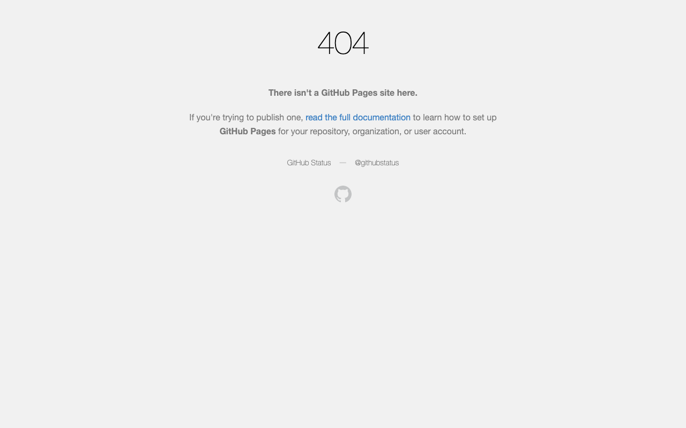
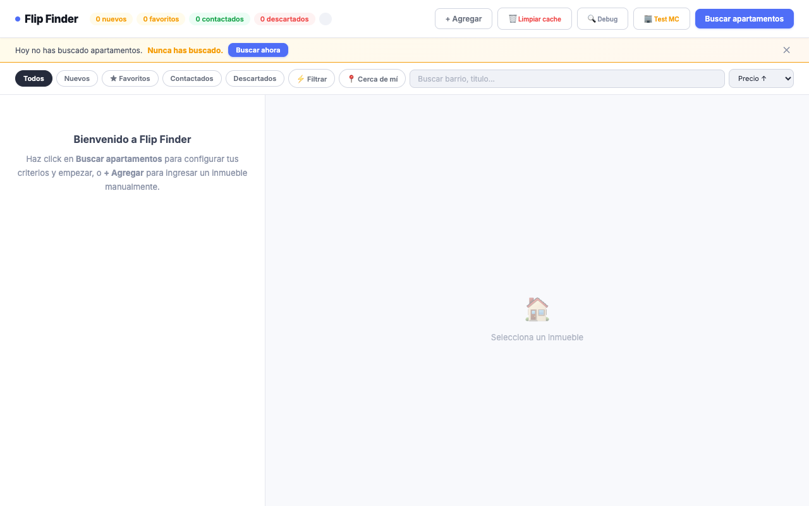
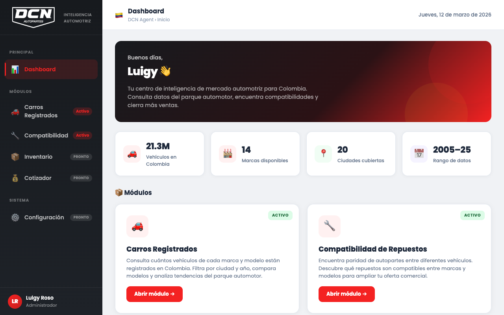

Senior Product Manager & AI Agent Builder — Shipping LLM-Powered Products from 0→1 | Growth & Revenue at Scale
About
Senior Product Manager who builds and ships AI-powered products end-to-end. Currently leading a multi-product portfolio at Double Nines — including Freepour (Bacardi & Diageo), a B2C platform serving 170K+ users. Drove engagement from 55% to 83% in three months. On the side, designing multi-agent AI systems (Claude-powered) that replace legacy business workflows.
Rare hybrid of product strategy and hands-on AI development — I write PRDs and I write prompts. Full ownership across discovery, agent architecture, roadmap governance, LLM integration, launch strategy, and post-launch optimization. Former co-founder with a bias for action who sees AI agents as the next product platform.
Years of Experience
Users Reached
Freelance Success
Journey
From startups to global brands — every role shaped who I am.
Nov 2018 – Nov 2019
Co-Founder — Bogota
Co-founded a cocktail delivery company, self-bootstrapped from day one with zero VC funding. Owned the entire business roadmap, product management, supply chain, and inventory. Built and launched the product catalog and led customer acquisition.
Jul 2019 – Jan 2020
Junior Product Manager — Colombia
Led an 8-person team of designers, developers, and a marketing specialist for an event software platform. Implemented a workflow management system from scratch, managed CRM for 200+ clients, and launched a loyalty program with 4 tiers.
Nov 2020 – Jul 2021
Trade Marketing Trainee — Bogota (South LATAM)
Worked at this global consumer goods leader (Rubbermaid, Sharpie, Coleman, Yankee Candle). Indirectly managed a 200+ person sales force and owned the incentives program. Direct contact with B2B customers and retailers, planning year-round roadmaps alongside the South LATAM Manager.
May 2021 – Sep 2022
Product Manager — Bogota
Product & commercial lead at this Bogota-based Startup Studio. Led strategic pivoting for MVPs and scale-ups, managed 5+ multidisciplinary teams in parallel, and built product roadmaps and vision from scratch for 7+ products. Increased new clients by 2x over six months through commercial calls with strategic focus.
Aug 2022 – Jul 2023
Co-Founder & Head of Product
Led end-to-end product development across e-commerce, payments, and domains. Achieved 16,000 engaged leads in the first month through performance marketing. Launched MVP in under 2 weeks and iterated through continuous feedback loops.
Oct 2022 – Jun 2024
Product & Project Manager — Independent Contractor
Achieved Top 3% contractor status and Top Rated Plus badge. Led product strategy and execution for U.S.-based B2B tech clients, guiding teams through full product lifecycles with on-time, on-budget delivery of innovative SaaS solutions.
Feb 2023 – Sep 2023
Chief of Staff | Head of Delivery Excellence — Richmond, VA
Right hand to the CEO — collaborated with the executive team to determine and prioritize business strategies. Managed strategic initiatives from ideation to implementation, defined KPIs for team performance, led workshops, assessed risk on business decisions, and provided operational oversight across the organization.
May 2024 – Present
Product Manager — Miami / Medellin
Leading a multi-product portfolio at this digital product studio serving Bacardi, Ryder, and Sunbelt. Spearheaded the Freepour web app launch (Bacardi & Diageo bartender education platform), transitioning from native to web. Drove engagement growth from 55% to 83% within three months and scaled the user base from 150K to 170K in six months through KPI-driven prioritization and structured experimentation.
May 2025 – Present
Principal Product Manager — Bogota
Founding and sole PM of this mobility marketplace connecting buyers and sellers. Owned the full 0→1 product lifecycle — from concept validation and user research to MVP development, launch, and iteration. Built all core features (listings, search, auth, payments, dealer workflows) and created the foundational PRDs, user stories, and acceptance criteria. Established all product processes, rituals, and documentation now used across the company. Coordinated GTM planning across marketing and operations.
Skills
Designing and building multi-agent AI systems end-to-end. Architected a 13-module Claude-powered agent platform replacing legacy ERP workflows — from prompt engineering and tool-use design to orchestration and evaluation.
Full product lifecycle for AI-powered products — from opportunity sizing and user research through PRDs with prompt specs, LLM evaluation frameworks, and AI-specific launch playbooks. I bridge the gap between what the model can do and what users need.
Data-driven decision-making using KPIs, SQL, and dashboards. Drove 55% to 83% engagement through structured experimentation and KPI-driven prioritization.
Hands-on with code, APIs, and developer tools. Comfortable in the terminal, reviewing PRs, writing integration specs, and shipping alongside engineers — not just managing from a slide deck.
Built and scaled products across both markets — from SaaS for U.S. clients to consumer platforms serving 170K+ users for global brands like Bacardi & Diageo.
Cross-functional team leadership across LATAM and U.S. markets. Managed up to 5 teams in parallel in remote-first, high-accountability environments.
Side Projects
Personal projects where I explore ideas, ship fast, and learn by doing.



AI-native business intelligence consultancy for a Colombian auto parts distributor (~$14M USD/yr revenue, 1,150 clients). Designed a 13-module AI agent system replacing Excel-heavy workflows — connecting their ERP (SIESA) to Claude-powered dashboards for finance, procurement, inventory, and FX optimization.
Education
Universidad Rey Juan Carlos, Spain
2023 – 2024
Universidad Externado de Colombia
Emphasis in Finance & Innovation
2015 – 2020
QUT — Queensland University of Technology
Brisbane, Australia
2016 – 2017
Brand Management — University of London (2020)
Become a Product Manager — Udemy (2019)
De Cero a Product Manager — Soy Startup Latam (2022)
Contact
Open to opportunities, collaborations, and conversations.